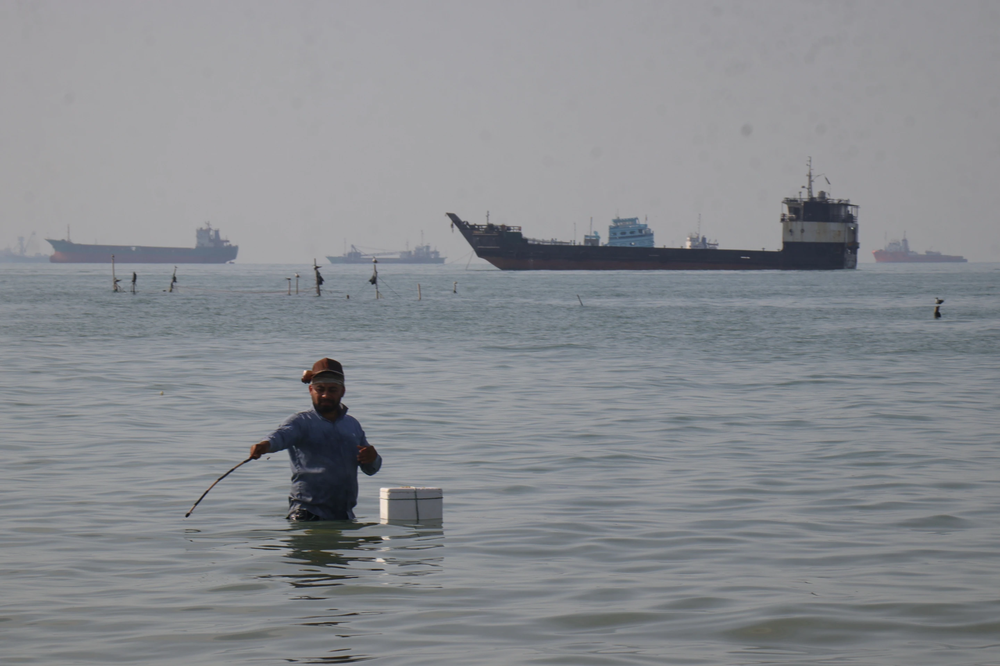

Monday, June 29, 2026
LIVE 7hrs ago
A man stands in the water, appearing to fish, as bulk carriers, cargo ships, and service vessels line the horizon in the Strait of Hormuz off Bandar Abbas, Iran, Monday, April 27, 2026


DUBAI, United Arab Emirates — President Donald Trump announced on Monday that the US would start an attempt to "guide" ships that are stuck in the Strait of Hormuz, which is controlled by Iran. This comes after two ships in the strait reported attacks.
Trump didn't say much about what may be a big effort to rescue hundreds of ships and 20,000 sailors. Iran promptly called the move a violation of the ceasefire.
In a statement on social media on Sunday, Trump said that the Iran war has affected "neutral and innocent" countries. He also said, "We have told these countries that we will guide their ships safely out of these restricted waterways so that they can freely and ably get on with their business."
Trump announced that "Project Freedom" would start on Monday morning in the Middle East. He also added that his representatives are talking to Iran about something that might be "very positive for all."
The U.S. Central Command indicated that the plan would include guided-missile ships, over 100 planes, and 15,000 service people. The Pentagon didn't answer questions right away about how they would be used.
Iran's successful blockade of the strait after the U.S. and Israel started the conflict on February 28 has rocked markets around the world.
Since the war started, ships and sailors, many of whom are on oil and gas tankers and cargo ships, have been stuck in the Persian Gulf. TheNewyork has heard from crew members who saw intercepted drones and missiles explode over the water as their ships ran out of food, water, and other supplies. A lot of sailors are from India and other countries in South and Southeast Asia.
Trump tweeted, "They are victims of circumstance," and called the endeavor a "humanitarian gesture on behalf of the United States, Middle Eastern countries, and especially the country of Iran." He did, however, give a warning: "If this humanitarian process is interfered with in any way, that interference will, unfortunately, have to be dealt with forcefully."
The state-run IRNA news agency in Iran stated that Trump's remark was part of his "delirium." Ebrahim Azizi, director of the national security panel of Iran's parliament, said on X that any meddling in the strait would be viewed as a ceasefire violation.
Iran said it was looking over the U.S. reaction to its latest proposal to end the war, and Trump spoke hours later. He made it clear that these are not nuclear talks. It looks like the shaky three-week ceasefire is still in place.
The British military's United Kingdom Maritime Trade Operations center said that earlier on Sunday, a cargo ship near the Strait of Hormuz was attacked by several small boats. Another ship was hit by "unknown projectiles." Since the start of the Iran conflict, there have been at least two dozen strikes in and around the strait. These were the most recent ones, and they serve as a warning of the dangers that could come if the current U.S. plan goes through.
No one was hurt.
These were the first assaults in the area since April 22. Tehran has virtually closed the strait by attacking and threatening ships. The threat level in the area is still very high.
According to the British monitor, the first ship was an unidentified cargo ship going north near Sirik, Iran, which lies east of the strait. Iranian officials have said that they control the strait and that ships that are not from the US or Israel can pass through it provided they pay a toll. This goes against international law's provision of free navigation.
Iran denied that there was an attack, according to the semiofficial Iranian news agencies Fars and Tabnak. They added that a ship that was passing by had been stopped for a check of its papers as part of monitoring.
Iranian police boats are small, quick, and hard to find. Some of them just have two outboard motors. Last month, Trump told the U.S. military to "shoot and kill" tiny Iranian boats that put mines in the strait.
The second ship, a tanker, said it was hit around 11:40 p.m. Sunday as it was off Fujairah, United Arab Emirates.
The British military monitor also claimed on Sunday that ships in Ras al-Khaimah, the northernmost emirate in the United Arab Emirates and close to the strait, had received radio cautions to leave their anchorages. It wasn't obvious who sent the VHF messages.
Iran's Foreign Ministry spokesman Esmail Baghaei told the Mizan news agency that Tehran is looking into the U.S. reaction to its most recent request to halt the war.
Baghaei stated, "But right now, we have no nuclear talks." The U.S. and Iran have been at odds over Iran's nuclear program and enriched uranium for a long time, but Tehran would prefer deal with it later.
Iran's state-linked media say that Iran's approach wants other concerns settled in 30 days and hopes to finish the war instead of extending the ceasefire. Trump said on Saturday that he was looking at the plan, but he didn't think it would lead to a deal.
According to the semi-official Nour News and Tasnim agencies, which have close ties to Iran's security organizations, Iran's 14-point proposal calls for the U.S. to lift sanctions on Iran, end the naval blockade of Iranian ports, pull its troops out of the region, and stop all fighting, including Israel's operations in Lebanon.
Two Pakistani officials, who asked to remain anonymous because they were not allowed to speak to the media, said that Pakistan's prime minister, foreign minister, and army chief are still urging the U.S. and Iran to talk to each other directly. Last month, Pakistan sponsored face-to-face meetings and has sent messages back and forth between the two parties.
Trump has come up with a proposal to reopen the Strait of Hormuz, which is where nearly a fifth of the world's oil and natural gas traffic goes, along with fertilizer that farmers across the world need severely and other items made from oil.
Iran's deputy parliament speaker, Ali Nikzad, stated earlier on Sunday that Tehran "will not back down from our position on the Strait of Hormuz, and it will not return to its prewar conditions."
The U.S. has told maritime companies that they could be punished if they pay Iran in any way, even with digital assets, to securely cross the strait.
At the same time, the U.S. naval blockade since April 13 is taking away oil money that Tehran needs to help its struggling economy. The U.S. Central Command stated on Sunday that 49 commercial ships have been directed to turn around.
U.S. Treasury Secretary Scott Bessent told Fox News on Sunday, "We think they've gotten less than $1.3 million in tolls, which is a pittance on their previous daily oil revenues." He claimed that Iran's oil storage is filling up quickly, and "they're going to have to start shutting in wells," which we anticipate could happen in the next week.